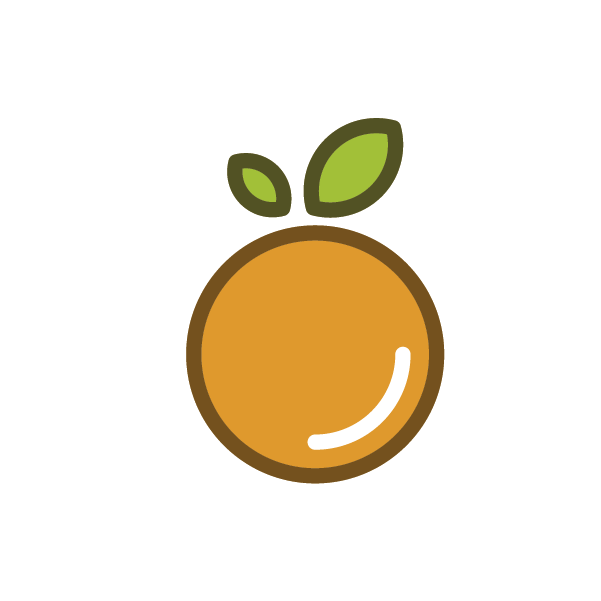
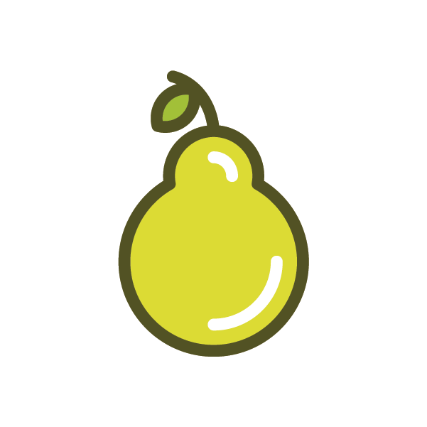
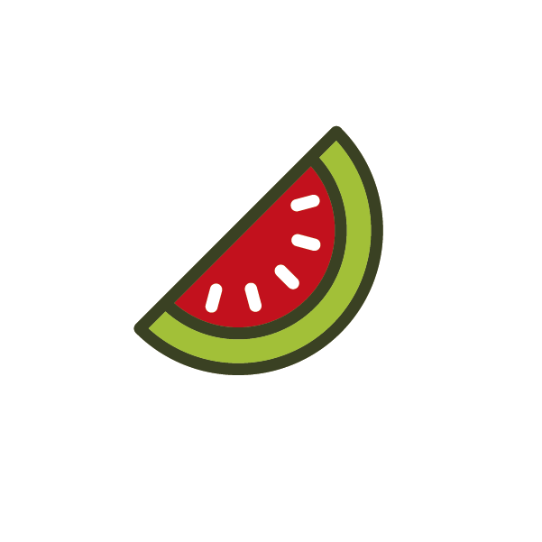

Cereixas
As cereixas son un froito vermello.

Laranxa
As laranxas son unha froita laranxa.

Limón
Os limóns son unha froita amarela.

Mazá
As mazás son unha froita que pode ser verde.

Pera
As peras son unha froita verde.

Sandía
As sandías son unha froita verde.